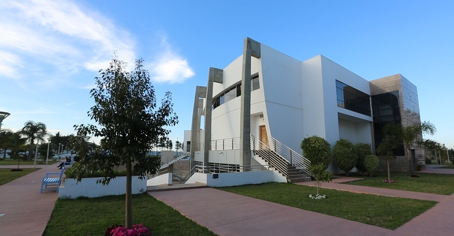
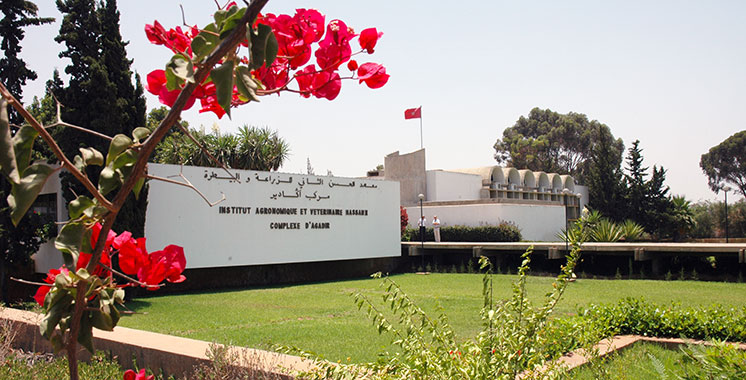
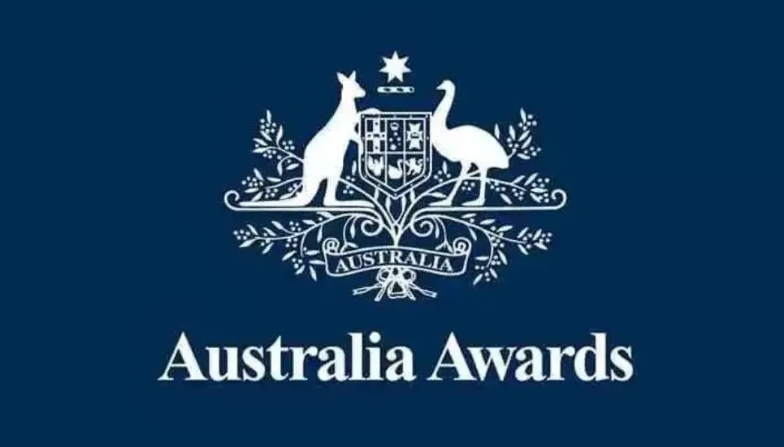
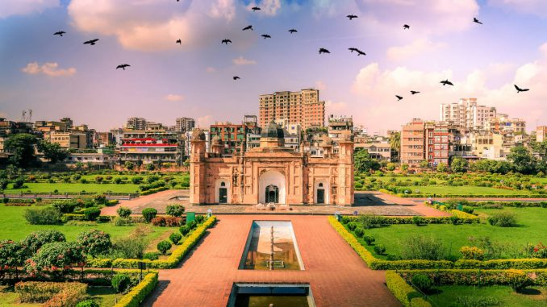
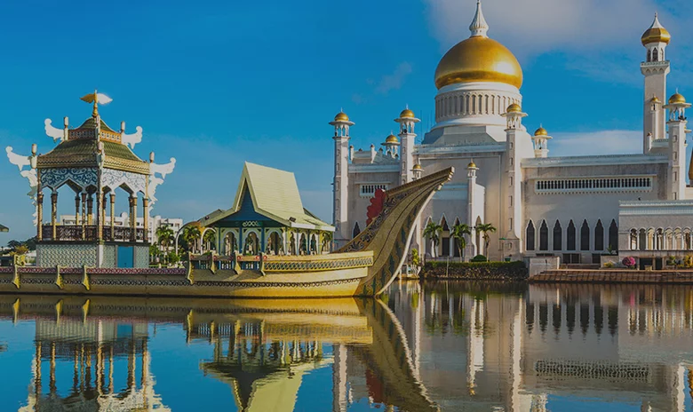

 Publié le 18 Mai 2025 Deux (02) bourses de formation de l’Institut National de Postes et télécommunications (INPT) du Maroc au titre de l’année académique 2025/2026 Lire la suite
 Publié le 18 Mai 2025 (01) bourse d’étude au Complexe Horticole d’Agadir, au titre de l’année académique 2025-2026 Lire la suite
 Publié le 15 Avril 2025 Ouverture du programme de bourses d’études du gouvernement australien pour l’année 2026 dénommée «Australia Awards» Lire la suite
Publié le 14 Avril 2025 (15) bourses d’études (Égypte) en Licence et en Master, au titre de l’année académique 2025-2026 Lire la suite
 Publié le 12 Avril 2025 Bourses d’études de l’Université islamique de Technologie (UIT) pour l’année académique 2024/2025 Lire la suite
 Publié le 11 Février 2025 Bourses d’études de Brunei Darussalam au titre de l’année académique 2025-2026 Lire la suite